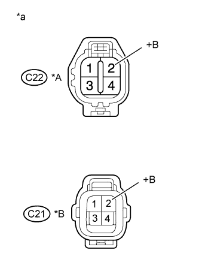

DTC P0037 Oxygen Sensor Heater Control Circuit Low (Bank 1 Sensor 2) |
DTC P0038 Oxygen Sensor Heater Control Circuit High (Bank 1 Sensor 2) |
DTC P0057 Oxygen Sensor Heater Control Circuit Low (Bank 2 Sensor 2) |
DTC P0058 Oxygen Sensor Heater Control Circuit High (Bank 2 Sensor 2) |
DTC P102D O2 Sensor Heater Circuit Performance Bank 1 Sensor 2 Stuck ON |
DTC P105D O2 Sensor Heater Circuit Performance Bank 2 Sensor 2 Stuck ON |
| DTC No. | DTC Detection Condition | Trouble Area |
| P0037 P0057 | The heater current is below the specified value while the heater is operating (1 trip detection logic). |
|
| P0038 P0058 | The heater current is higher than the specified value while the heater is operating (1 trip detection logic). |
|
| P102D P105D | The heater current is higher than the specified value while the heater is not operating (1 trip detection logic). | ECM |
| Frequency of Operation | Continuous |
| Time after heater ON | 10 seconds or more |
| Time after heater ON | 10 seconds or more |
| Time after heater ON | 10 seconds or more |
| Time after heater ON | 10 seconds or more |
| Tester Display | Description |
| NORMAL |
|
| ABNORMAL |
|
| INCOMPLETE |
|
| UNKNOWN |
|
| 1.INSPECT HEATED OXYGEN SENSOR (HEATER RESISTANCE) |
Inspect the heated oxygen sensor (Click here).
|
| ||||
| OK | |
| 2.CHECK TERMINAL VOLTAGE (+B OF HEATED OXYGEN SENSOR) |
|  |
Disconnect the heated oxygen sensor connector.
Turn the engine switch on (IG).
Measure the voltage according to the value(s) in the table below.
| Tester Connection | Switch Condition | Specified Condition |
| C22-2 (+B) - Body ground | Engine switch on (IG) | 11 to 14 V |
| C21-2 (+B) - Body ground | Engine switch on (IG) | 11 to 14 V |
| *A | Bank 1 sensor 2 |
| *B | Bank 2 sensor 2 |
| *a | Front view of wire harness connector (to Heated Oxygen Sensor) |
|
| ||||
| OK | |
| 3.CHECK HARNESS AND CONNECTOR (HEATED OXYGEN SENSOR - ECM) |
Disconnect the heated oxygen sensor connector.
Disconnect the ECM connector.
Measure the resistance according to the value(s) in the table below.
| Tester Connection | Condition | Specified Condition |
| C22-1 (HT1B) - C31-12 (HT1B) | Always | Below 1 Ω |
| C21-1 (HT2B) - C31-13 (HT2B) | Always | Below 1 Ω |
| C22-1 (HT1B) or C31-12 (HT1B) - Body ground | Always | 10 kΩ or higher |
| C21-1 (HT2B) or C31-13 (HT2B) - Body ground | Always | 10 kΩ or higher |
|
| ||||
| OK | |
| 4.CHECK WHETHER DTC OUTPUT RECURS |
Connect the intelligent tester to the DLC3.
Turn the engine switch on (IG).
Turn the tester on.
Clear DTCs (Click here).
Start the engine.
Drive the vehicle in accordance with the driving pattern described in Confirmation Driving Pattern.
Read the output pending DTCs using the intelligent tester.
| Result | Proceed to |
| No pending DTC is output | A |
| Pending DTC P0037, P0038, P0057, P0058, P102D and/or P105D is output | B |
|
| ||||
| A | ||
| ||
| 5.INSPECT NO. 1 INTEGRATION RELAY (EFI) |
Inspect the No. 1 integration relay (EFI) (Click here).
|
| ||||
| OK | |
| 6.CHECK HARNESS AND CONNECTOR (HEATED OXYGEN SENSOR - NO. 1 INTEGRATION RELAY) |
Disconnect the heated oxygen sensor connector.
Remove the No. 1 integration relay from the engine room relay block.
Measure the resistance according to the value(s) in the table below.
| Tester Connection | Condition | Specified Condition |
| C22-2 (+B) - 1B-4 | Always | Below 1 Ω |
| C21-2 (+B) - 1B-4 | Always | Below 1 Ω |
| C22-2 (+B) or 1B-4 - Body ground | Always | 10 kΩ or higher |
| C21-2 (+B) or 1B-4 - Body ground | Always | 10 kΩ or higher |
|
| ||||
| OK | ||
| ||